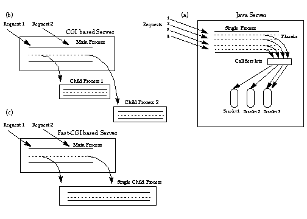
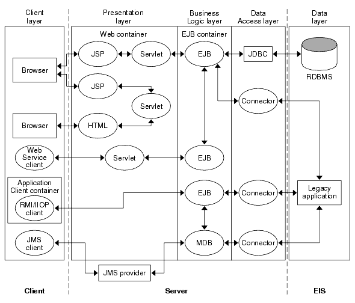
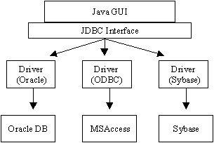
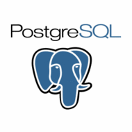
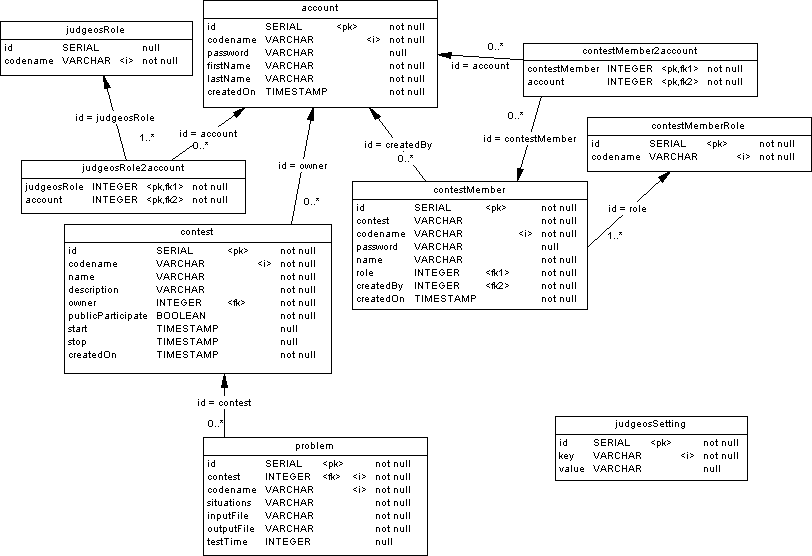

Курсовая работа
Выполнил: Лазерко Дмитрий Викторович,
студент 2 курса, ММФ БГУ, 6 группа
Проверил: Суздаль Станислав Валерьевич,
доцент кафедры ЧМиП, ММФ, БГУ.
2006-05-22
Технологии J2EE.
Разработка системы управления ACM-ICPC олимпиадами.
Содержание.
-
Цели данной работы.
Изучить технологии J2EE на примере создания системы управления ACM-ICPC олимпиадой.
-
J2EE
Java 2 Enterprise Edition, сокращенно J2EE -- набор
спецификаций и
соответствующей документации для языка Java, описывающей архитектуру серверной платформы для задач
средних и
крупных предприятий.
Спецификации детализированы настолько, чтобы обеспечить переносимость программ c одной реализации
платформы
на другую. Основная цель спецификаций -- обеспечить масштабируемость приложений и целостность данных во
время работы системы. J2EE во многом ориентирована на использование её через веб как в интернете, так и
на
локальных сетях. Вся спецификация создаётся и утверждается через JCP (Java Community Process) в рамках
инициативы Sun Microsystems Inc.
Платформу J2EE используют в настоящее время большинство банков и крупных корпораций для организации
веб-порталов и предоставления услуг онлайн, особенно если необходимо обеспечить бесперебойную работу
многих
тысяч пользователей.
Более подробное описание некоторых пакетов и технологий J2EE, использованных в данной работе, будет
приведено
ниже в главах 1-4.
-
ACM-ICPC

ACM-ICPC (Association for Computer Machinery - International
Collegiate Programming Contest) -- крупнейшая студенческая командная олимпиада по
программированию.
Организатором олимпиады является влиятельная в компьютерном мире организация Association for Computer
Machinery (ACM), а спонсорами соревнований в последние годы являлись компании IBM и Microsoft. Своими
корнями чемпионат уходит в соревнование, проводившееся в Техасском университете в 1970. Свой нынешний
облик
чемпионат принял в 1977, когда первый финал был проведен в рамках научной конференции ACM, и с тех пор
проводится ежегодно.
Тур олимпиады происходит следующим образом: каждой команде выдаётся компьютер и от шести до шестнадцати
задач на пять часов. Команды пишут решения на алгоритмический язык C, C++, Паскале или Java и посылают
их на
тестирующий сервер. Программы тестируются на большом количестве различных входных тестов, неизвестных
участникам. Если программа выдала неправильный ответ или не уложилась в ограничения по времени или
памяти,
то пославшая её команда получает об этом сообщение и может послать исправленную версию. Задача считается
решённой, если программа выдала правильные ответы на всех тестах. В отличие от других олимпиад,
частичные
решения не учитываются.
Побеждает команда, решившая правильно наибольшее число задач. Если несколько команд решают одинаковое
количество задач, то их положение в рейтинге определяется штрафным временем. Изначально штрафное время
каждой команды равно нулю. За каждую правильно сданную задачу к штрафному времени команды прибавляют
время,
прошедшее с начала соревнования до момента сдачи задачи. Кроме того, если зачтённой попытке
предшествовало
несколько неудачных попыток сдать ту же задачу, то за каждую из них к штрафному времени прибавляют
двадцать
минут. За неудачные попытки сдать задачу, которую команде в итоге так и не удалось решить, штрафного
времени
не начисляется.
-
Системы управления ACM-ICPC олимпиадами.
Для того, чтобы обеспечивать проведение олимпиады по правилам ICPC, очевидно, необходим некий
"электронный
судья",
система, обрабатывающая в реальном времени запросы на проверку решений команд-участников,
ведущая статистику прогресса соревнования команд,
предоставляющая администраторский, жюри и наблюдательский доступ к олимпиаде.
В настоящий момент нет некей унифицированнай или хотя бы лидирующей такогй системы.
Олимпиады проводятся с использованием различных, несовместимых друг с другом, часто самописных
программах.
Причем в большинстве своем такие системы не распространяются либо распространяются с закрытым кодом.
В последнее время, в связи с увеличением интереса к проводимым на Механико-Математическом факультете БГУ
тренировках по информатике, возникла потребность в использовании такой системы при и
проведении тренировок ММФ. Проанализировав имеющиеся в доступе системы, организаторы тренировок
пришли к выводу, что качество, условия распространения/использования либо узконаправленность таких
систем не
удовлетворяет потребностям Механико-Математического факультета БГУ. Поэтому было принято решение
разработать
такую систему на базе своего факультета в рамках курсовой/дипломной работы. Было также решено выбрать
как
платформу
для разработки платформу Java EE 5 SDK, и определить условия распространения/использования системы
в рамках лицензии GNU General Public License (GPL)
В процессе разработки для проекта было выбрано название JudgeOS (Judge Open Source), как
официальный
сайт проекта -- домен www.judgeos.org и
judgeos.org (на данный момент незаригистрированы).

Java Servlet API позволяет разработчику программного
обеспечения
добавлять динамический контент в web-сервер, используя Java-платформу. Генерируемые данные -- это обычно HTML,
но
может быть любыми другими данными, например XML. Сервлеты сродни другим технологиям генерации динамического
web-контента, таким как, например, CGI, PHP и ASP.
Servlet API, содержащийся в Java-пакете javax.servlet, определяет ожидаемое взаимодействие web-контейнера с
сервлетом. По существу, web-контейнер -- это часть web-сервера, взаимодействующая с сервлетами.
Servlet -- это объект, который получает запросы (ServletRequest) и генерирует по нему ответ (ServletResponse).
API-пакет javax.servlet.http определяет HTTP-подклассы обобщенного сервлета(HttpServlet),
запроса(HttpServletRequest), ответа(HttpServletResponse), и сессии (HttpSession). Сервлеты могут быть упакованы
в
WAR-файл как web-приложение.
Кроме того, сервлеты могуть быть автоматически генерируемыми JSP-страницами или другими обработчиками шаблонов.
Часто сервлеты используются в связке с JSP-страницами, по так называемому "Model 2" шаблону, разновидностью
Model-View-Controller шаблона.
JSP (Java Server Pages) -- технология, позволяющая
веб-разработчикам
динамически генерировать HTML, XML и другие веб-страницы. Технология позволяет внедрять Java-код, а также EL
(expression language) в статичное содержимое страницы. Также могут использоваться библиотеки JSP тегов для
внедрения
их в JSP-cтраницы. Страницы компилируются JSP-компилятором в сервлеты, представляющие собой Java-классы, которые
выполняются на сервере. Сервлеты также могут быть написаны разработчиком, не используя JSP-страницы. Эти
технологии
могут дополнять друг друга.
JSP -- одна из высокопроизводительных технологий, т. к. весь код страницы транслируется в java-код сервлета с
помощью компилятора JSP страниц Jasper, и затем компилируется в байт-код виртуальной машины java (JVM).
Сервлет-контейнеры (Tomcat), способные исполнять JSP страницы, написаны на платформонезависимом языке Java,
который
может работать под различными операционными системами и на компьютерах с разной архитектурой, от персональных
компьютеров до высокопроизводительных серверов. Сервлет-контейнеры могут работать как полноценные
самостоятельные
веб-серверы, работать поставщиком страниц для другого веб-сервера или интегрироваться в J2EE сервер приложений.
JSTL (Java Server Pages Standart Tag Library -- библиотека
стандартных тегов JSP) -- это часть платформы разработки
Java EE web-приложения. Она расширяет JSP-спецификацию, добавляя библиотеку тегов для частых задач, таких как
обработка XML,
выполнения по условию, циклов и интернационализации. JSTL была разработана в процессе Java Community Process
(JCP)
как JSR 52.
JSTL предлагает эффективный путь встраивания логики в JSP-страницу без прямой вставки Java-кода. Использование
стандартизированного набора тегов, в отличие от подмешивания Java-кода, приводит к более легкому в поддержке
коду,
и дает возможность разделения подходов к разработке кода приложения и пользовательского интерфейса.

Struts -- это каркас/среда разработки web-приложений,
основанная
на архитектуре Model 2.
Эта гибридная архитектура отделяет бизнес-логику и логику отображения настолько, насколько это возможно.
Struts выполняет это путем выделения бизнес-логики в чистые Java-классы, которые манипулируют вашими данными,
а также путем предоставления богатой библиотеки тегов, которая может быть использована для отображения ваших
данных
при создании JavaServer Pages (JSP).
Struts включает содержит следующие основные функции:
-
Сервлет-контролер (controller servlet) который координирует запросы к соответствующим Action классам,
созданным разработчиком приложения.
-
Библиотеками JSP тэгов и их поддержкой в сервлете-контроллере, что помогает разработчикам в создании
интерактивных web-приложений, основанных на формах .
-
Вспомогательные классы для поддержки разбора (parsing) XML, автоматического наполнения JavaBeans, и
интернационализации сообщений и запросов.
Java DataBase Connectivity, сокращенно JDBC — Соединение с
Базой
Данных на Java — API для языка Java, который определяет методы, с помощью которых клиентское приложение на Java
осуществляет доступ к базе данных. Если быть точным, то JDBC является торговой маркой, а не аббревиатурой.

JDBC основана на концепции т. н. драйверов, позволяющих получать соединение с базой данных по специально
описанному
URL.
Соединение с базой данных описывается классом, реализующим интерфейс java.sql.Connection.
Имея соединение с базой данных, можно создавать объекты типа Statement, служащие для исполнения запросов к базе
данных на языке SQL.
Существуют следующие виды типы Statement, различающихся по назначению:
-
java.sql.Statement — Statement общего назначения.
-
java.sql.PreparedStatement — Statement, служащий для выполнения запросов, содержащих подставляемые параметры
(обозначаются значком '?' в теле запроса).
-
java.sql.CallableStatement — Statement, предназначенный для вызова хранимых процедур.

PostgreSQL - это объектно-реляционная система управления базами данных
(ORDBMS)
(по-русски ОРСУБД или просто СУБД) основанная на POSTGRES, версии 4.2, которая была разработана в Научном
Компьютерном Департаменте Беркли Калифорнийского Университета. POSTGRES является пионером во многих аспектах,
которые стали доступны в некоторых коммерческих СУБД много позже.
PostgreSQL - это продукт с открытым исходным кодом, который является потомком оригинального кода, написанного в
Беркли. PostgreSQL поддерживает большую часть стандарта SQL:2003 и предлагает множество современных
возможностей:
- комплексные запросы
- внешние ключи
- триггеры
- представления (views)
- транзакционная целостность
- многоверсионное управление параллельным доступом
Также, возможности PostgreSQL могут быть расширены пользователем путём добавления новых
- типов данных
- функций
- операторов
- агрегатных функций
- индексных методов
- процедурных языков
Поскольку СУБД PostgreSQL выпускается под либеральной лицензией, её можно бесплатно использовать, модифицировать
и
распространять для любых целей, включая личные, коммерческие или академические.
Проект разрабатывается с использованием
-
Java Servlet
Версия: 2.4
Основные сервлеты: JSP и Struts.
Ниже приведен текст контроллера сервлета, выполняющего регистрацию пользователя
на сайте (Sign Up). Вкупе с использованием технологии Struts, код выглядит простым и понятным.
package org.judgeos.controller;
import org.apache.struts.Globals;
import org.apache.struts.action.*;
import org.judgeos.DBFactory;
import org.judgeos.IncorrectSetupException;
import org.judgeos.model.Account;
import javax.servlet.http.HttpServletRequest;
import javax.servlet.http.HttpServletResponse;
import java.sql.Connection;
import java.sql.PreparedStatement;
import java.sql.SQLException;
/**
* Process user registration.
*/
public class SignupAction extends Action {
/**
* Checks for existence of the same codename in DB and, if so, returns 'failure' forward,
* else adds the record to the 'account' table and returns 'success' forward. Note that
* actions to automatically log the user in must be done on 'success' forward.
* @param mapping
* @param form
* @param request
* @param response
* @return 'failure' or 'success' forwards
* @throws Exception
*/
public ActionForward execute(
ActionMapping mapping,
ActionForm form,
HttpServletRequest request,
HttpServletResponse response
) throws Exception {
if (Account.codenameExists(request.getParameter("codename"))) {
ActionMessage msg = new ActionMessage("errors.account.codenameUsed");
addErrorMessage(msg, request);
return mapping.findForward("failure");
}
addAccount(request);
return mapping.findForward("success");
}
/**
* Inserts account row to the 'account' table basing on request parameters data.
* @param request
* @throws IncorrectSetupException
* @throws SQLException
*/
private void addAccount(HttpServletRequest request) throws IncorrectSetupException, SQLException {
Connection c = DBFactory.getDbh();
String sql = "INSERT INTO account(codename, password, firstName, lastName) " +
"VALUES(?, ?, ?, ?)";
PreparedStatement st = c.prepareStatement(sql);
st.setString(1, request.getParameter("codename"));
st.setString(2, request.getParameter("password"));
st.setString(3, request.getParameter("firstName"));
st.setString(4, request.getParameter("lastName"));
st.execute();
}
/**
* Puts given error to global and SignupForm errors collections.
* @param msg
* @param request
*/
private void addErrorMessage(ActionMessage msg, HttpServletRequest request) {
for (String key: new String[]{
SignupForm.ERROR_KEY, Globals.ERROR_KEY}
) {
ActionMessages msgs = (ActionMessages)request.getAttribute(key);
if (msgs == null) {
msgs = new ActionErrors();
msgs.add("codename", msg);
request.setAttribute(key, msgs);
}
else {
msgs.add("codename", msg);
}
}
}
}
-
Java Server Pages и Java Standard Tag Library
Версия: JSP v2.0, standart-lib: Jakarta implementation v1.1.2 (JSTL 1.1)
Любые страницы, включая статические, реализованы JSP-страницами.
Активно используется возможность определения "custom" тегов, все теги собираются в библиотеку judgeos.tld
Активно используются теги core (c:*), format (fmt:*).
На примере первой строкой идет собственный тег <judgeos:fetchLastContests>,
остальные строки генерируют таблицу, построенную на данных, которые этот тег занес
в переменную текущего scope с именем, переданном в var.
<judgeos:fetchLastContests var="lastContests" limit="10"/>
<table class="lastContests">
<tr>
<th><fmt:message key="contest.name"/></th>
<th><fmt:message key="contest.start"/></th>
<th><fmt:message key="contest.stop"/></th>
</tr>
<c:forEach items="${lastContests}" var="contest">
<c:set var="classHot" value=""/>
<c:if test="${contest.isHot}">
<c:set var="classHot" value="hot"/>
</c:if>
<tr class="${classHot}">
<td class="name">
<html:link href="contest/info.jsp?codename=${contest.codename}"
styleClass="name"
>
<c:out value="${contest.name}"/>
</html:link>
</td>
<td>
<fmt:formatDate value="${contest.start}" type="both"
timeZone="UTC"
pattern="yyyy-MM-dd HH:mm:ss"
/>
</td>
<td>
<fmt:formatDate value="${contest.stop}" type="both"
timeZone="UTC"
pattern="yyyy-MM-dd HH:mm:ss"
/>
</td>
</tr>
</c:forEach>
</table>
-
Struts Action Framework
Версия: 1.2.8.
Все запросы "на чтение" имеют окончание '.jsp' либо '/' и реализованы jsp-страницами, остальные -- '.do' и
реализованы через org.apache.action-интерфейс. Все формы проходят валидацию (validation) средствами Struts,
все сообщения, допускающие возможность интернационализации, хранятся в стандартных .property файлах.
Основной файл для Struts проекта JudgeOS:
<?xml version="1.0" encoding="ISO-8859-1" ?>
<!DOCTYPE struts-config PUBLIC
"-//Apache Software Foundation//DTD Struts Configuration 1.2//EN"
"http://jakarta.apache.org/struts/dtds/struts-config_1_2.dtd">
<struts-config>
<form-beans>
<form-bean
name="AccountSignUpForm"
type="org.judgeos.controller.SignUpForm"
/>
<form-bean
name="AccountLogInForm"
type="org.judgeos.controller.LogInForm"
/>
</form-beans>
<global-exceptions>
</global-exceptions>
<global-forwards>
<forward name="root" path="/" />
<forward name="login" path="/account/login.jsp" />
</global-forwards>
<action-mappings>
<action
path="/account/signup"
type="org.judgeos.controller.SignUpAction"
name="AccountSignUpForm"
scope="request"
validate="true"
input="/account/signup.jsp"
>
<forward name="success" path="/account/login.do"/>
<forward name="failure" path="/account/signup.jsp" />
</action>
<action
path="/account/login"
type="org.judgeos.controller.LogInAction"
name="AccountLogInForm"
scope="request"
validate="true"
input="/account/login.jsp"
>
<forward name="success" path="/account/" redirect="true"/>
<forward name="failure" path="/account/login.jsp" />
</action>
<action
path="/account/logout"
type="org.judgeos.controller.LogOutAction"
>
<forward name="success" path="/" redirect="true"/>
</action>
</action-mappings>
<controller processorClass="org.apache.struts.tiles.TilesRequestProcessor"/>
<message-resources parameter="org.judgeos.MessageResources" />
<plug-in className="org.apache.struts.tiles.TilesPlugin" >
<set-property
property="definitions-config"
value="/WEB-INF/tiles-defs.xml"
/>
<set-property property="moduleAware" value="true" />
</plug-in>
<plug-in className="org.apache.struts.validator.ValidatorPlugIn">
<set-property
property="pathnames"
value="/WEB-INF/validator-rules.xml,/WEB-INF/validation.xml"
/>
</plug-in>
</struts-config>
-
Java DataBase Connectivity
Версия: 3
На данный момент соединение реализовано через класс java.sql.DriverManager, в будущем планируется перейти на
java.sql.DataSource с перспективой на технологию Hibernate.
-
PostgreSQL
Версия: 8.1
Схема структуры базы данных, in-development версия (см рисунок):

Здесь таблица account содержит все учетные записи пользователей + одну учетную запись
codename='guest', представляющая неаутентифицированных пользователей для избежания исключений их обработки.
Таблица contest содержит проводимые когда-либо олимпиады. Если contest.publicParticipate=TRUE, это
значит,
что любой аутентифицированный пользователь может стать участником олимпиады, иначе допускаются только
участники,
занесенные администратором олимпиады в таблицу участников олимпиады (contestMember).
Таблица contestMember содержит участников олимпиады. Стоит заметить, что под участником понимается не
только
соревнующаяся команда, но также члены жюри(либо их команда), администраторы олимпиады, тренеры и другие
пользователи олимпиады. Их права(роли) представлены в таблице contestMemberRole. Участник олимпиады
не обязательно должен иметь account в системе JudgeOS, что позволяет избежать необходимости регистрироваться
дважды для участников олимпиады.
-
Также в проекте использованы некоторые другие технологии, например Enterprise JavaBeans (EJB),
Java Naming and Directory Interface (JNDI), не описанные в данном документе.
В процессе дальнейшей разработки планируется воспользоваться возможностями
Tiles для модулирования
View-структуры;
осуществлять взаимодействие с системой управления базами данных через java.sql.DataSource класс, возможно
используя
JNDI для определения аргументов подключения.
Также будет рассмотрена возможность перехода проекта на платформу разработки Spring,
с использованием технологии Hibernate.
В данной работе была спроектирована базовая структура системы управления ACM-ICPC олимпиадой с использованием
набора
технологий J2EE. В процессе разработки были детально рассмотрены и использованы каждая из них.
Диск содержит все файлы проекта, а также некоторые продукты, использованные в разработке.